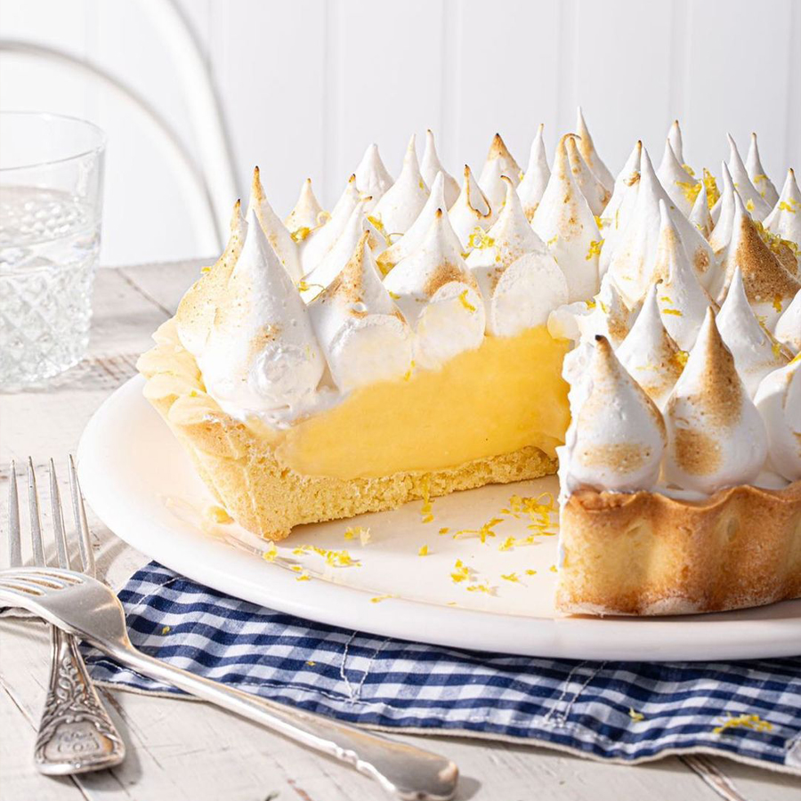

La tarta de limón con merengue, tarta de limón merengada o pie de limón es una tarta de limón, por lo general servida como postre, hecha con una corteza de masa quebrada, rellena de crema de limón y un esponjoso merengue en la parte superior.

Ingredientes
Masa:
Harina 0000 300 g.
Manteca 200 g.
Azúcar 100 g.
Yema 1 unid.
Sal fina C/N.
Relleno:
Yemas 4 unid.
Leche 1/2 L.
Jugo de limón 200 cc.
Azúcar 200 g.
Almidón de maíz 60 g.
Manteca 1 cda.
Ralladura de limón.
Para el merengue:
Claras 4 unid.
Azúcar 220 g.
Agua 75 cc.
Preparación
Hacer la masa:
Batir la manteca pomada con el azúcar (podés usar azúcar mascabo).
Agregar la yema y la esencia de vainilla. Una vez que esté bien emulsionado agregar la harina.
Unir rápidamente y llevar a frío.
Estirar la masa y fonsar un molde desmontable.
Cocinar la masa:
Colocar sobre el molde un papel film que cubra la totalidad de la masa, poniendo un un peso encima (puede ser porotos, garbanzos, etc).
Cocinar pinchada con tenedor por 15 minutos a horno moderado, hasta que esté cocida totalmente.
Hacer la crema:
En una olla calentar la leche con la mitad del azúcar. Por otro lado, mezclar en un bowl el resto del azúcar con el almidón de maíz
Mezclar bien e incorporar las yemas, el jugo y la ralladura de limón. Una vez mezclado agregar la leche caliente y llevar a cocinar todo junto revolviendo siempre.
Cocinar hasta que hierva por un minuto y retirar del fuego. Agregar la manteca y tapar con un film en contacto
Una vez que se enfríe la crema de limón, cubrir la masa de tarta.
Hacer el merengue:
Para hacer un merengue italiano colocar en un bowl las claras y batirlas a punto nieve.
Por otro lado, se prepara el almíbar, para esto se debe llevar agua y azúcar a una olla a fuego fuerte hasta que el azúcar se funda formándose un almíbar espeso.
Agregar este almíbar a las claras mientras se van batiendo por unos 7 minutos. Luego colocar un papel film en contacto.
Armar el lemon pie:
Cuando se lleva el relleno a la masa, es conveniente colocar una base de almendras trituradas para evitar que el merengue se deslice.